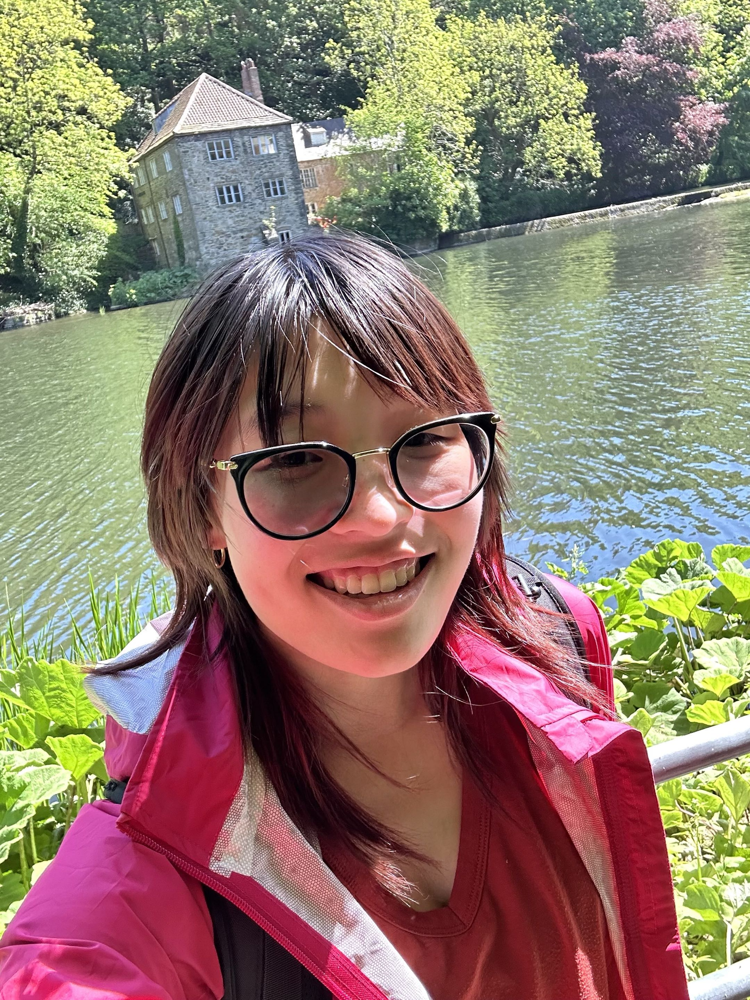

I am currently a senior at Indiana University studying computer science with a specialization in game development. I am also pursuing a minor in game design. I have been drawing ever since I was a little kid, and over time I have turned my passion for creating artwork towards games. I am particularly interested in creating UI/UX for videogames, though I have a lot of experience in different aspects of game design! I believe UI/UX is an underrated aspect of games: While it has the ability to entirely make or break your experience, it is not something that you are usually focused on. A good GUI will usually go under the radar because there are not issues that ruin the game experience. I think this is fascinating, and I love the intersection of programming and design in UI/UX.
Other than making games, there are a lot of things that I am passionate about! I love playing videogames, crafting, making cosplays, playing piano, and much more. I adore cute and cozy things and have a large collection of blankets and pillows that take up most of my bed. I really love cozy farming simulator games like Stardew Valley but I also enjoy Hollow Knight, Risk of Rain 2, Rocket League, House Flipper, and more! I have a huge collection of games on steam but I am super slow about actually getting to my backlog. I am very passionate about videogames, and I hope someday to make games that bring other people joy and leave a lasting impression, just as the games I have played have done for me.
